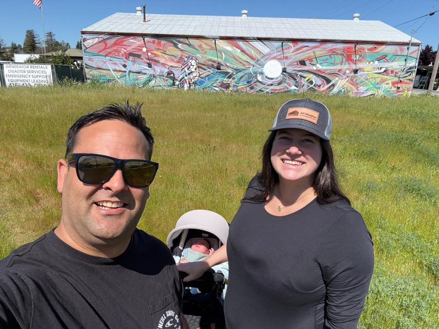
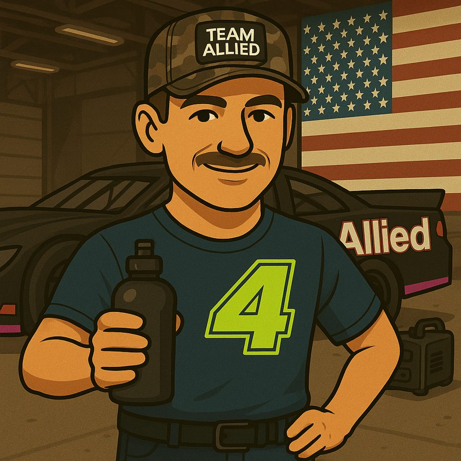

Team Allied

Tap for alter ego 🦸Alter Ego

Michael
Founder, Leader & Chief Vision Wrangler
Founder · since 2002B.A. Economics, San Jose State
Michael co-founded Allied Restoration Company with his dad back in 2002 — before TikTok, smart homes, or oat milk lattes. They started with one location in Seattle, a truck, some big ideas, and probably a roll of duct tape.
More about Michael
By 2010, Michael launched the San Francisco office and took things up a notch. Fast forward to today, and Allied is one of the fastest-growing private companies in America — a fact that surprises no one who's seen Michael on a mission (or on caffeine).
As the fearless leader of Team Allied, Michael is in charge of pointing the ship in the right direction, yelling "let's go!" a lot, and making sure the culture stays strong, the team stays sharp, and the coffee stays hot.